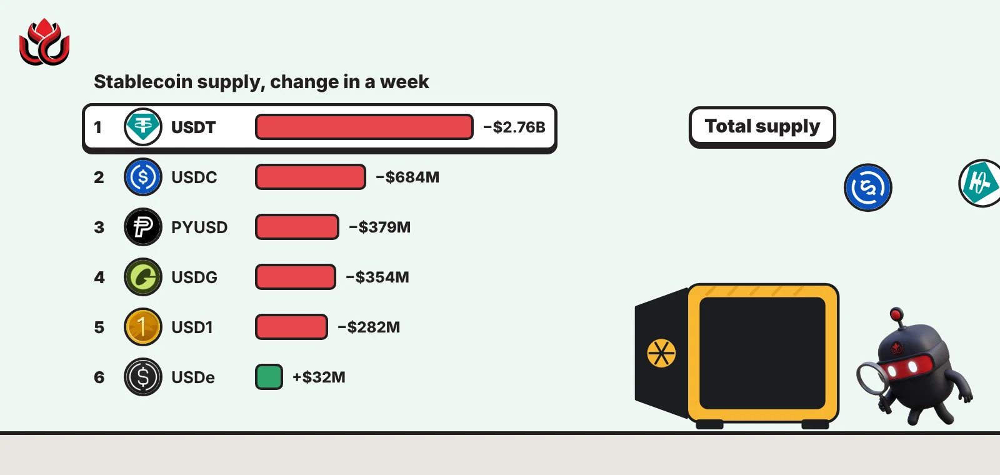
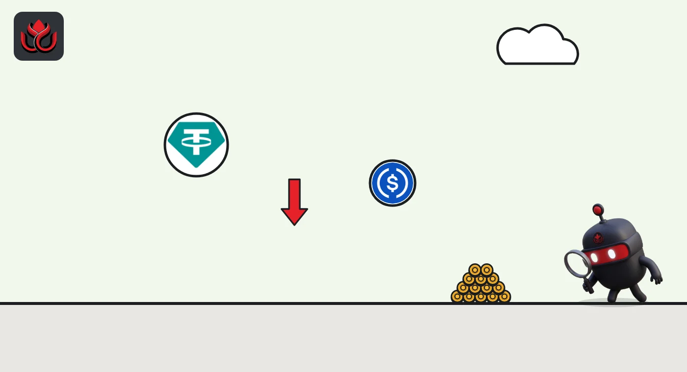

Stablecoin supply shrank $5 billion in six days. USDT fell the most
DefiLlama shows the total supply of dollar stablecoins fell every day from October 30 to November 5, the day bitcoin dropped below $76,000. Tether's USDT supply fell $2.76 billion in a week.

Key points
- Total stablecoin supply fell from $299.70 billion on October 30 to $294.65 billion on November 5, about $5.05 billion, DefiLlama's daily data shows.
- USDT supply dropped $2.76 billion in a week and $6.48 billion in a month. USDC fell $684 million in a week.
- Ethena's USDe was the only top-eight dollar token in DefiLlama's list that grew over the week, up about $32 million.
What moved
Stablecoins are tokens built to stay at $1, like USDT and USDC. Traders keep them on exchanges and in DeFi as ready cash. When the total supply shrinks, it usually means holders are cashing tokens back in to the issuer for real dollars, which takes that cash out of crypto.
DefiLlama's daily snapshots show the total supply of dollar stablecoins fell on every day of the past week: from $299.70 billion on October 30 to $294.65 billion on November 5. That is about $5.05 billion, or 1.7%, in six days. Counting from October 29, when supply stood at $300.08 billion, the seven-day fall was about $5.43 billion. The tokens were not lost or stolen: the drop in supply means more tokens were redeemed and destroyed by issuers than were newly created.
Total US dollar stablecoin supply, daily snapshot
US$ billion
Source: DefiLlama stablecoins API, daily points at midnight UTC, read November 6, 2026, 12:45 a.m. ET
Which tokens shrank
Per-token figures from DefiLlama (read at 12:45 a.m. ET on November 6) compare today's supply with a week ago:
- USDT (Tether): $177.45 billion, down $2.76 billion in a week and $6.48 billion in a month.
- USDC (Circle): $70.78 billion, down $684 million in a week and $3.51 billion in a month.
- PYUSD (PayPal): down $379 million in a week to $2.66 billion.
- USDG (Global Dollar): down $354 million to $2.72 billion.
- USD1 (World Liberty Financial): down $282 million to $3.60 billion.
USDT and USDC together account for about $3.45 billion of the weekly fall. The next two biggest dollar tokens also shrank a little: Sky's USDS fell about $27 million to $6.48 billion and DAI about $81 million to $4.69 billion.
Ethena's USDe went the other way, up about $32 million to $4.56 billion. Ripple's RLUSD, ninth by size, also grew, by about $22 million to $2.63 billion.

Why it matters during the sell-off
The shrink happened in the run-up to and during the November 5 drop. CoinGecko shows bitcoin near $80,300 at 7 a.m. ET on November 5 and about $75,960 by 11 a.m. ET. At 12:38 a.m. ET on November 6 it traded at $75,535, down 6.2% in 24 hours. Ether was at $2,222.50, down 8.3%.
The data does not show who redeemed or why. It only shows the supply went down.
LC Insight analysis
This section is our reading of the facts above, not a statement of fact.
- We think the steady daily decline matters more than any single day: it looks like net redemptions out of crypto, not just tokens moving between exchanges.
- Fewer stablecoins in circulation means less ready cash inside crypto to buy dips. USDT shrinking by $6.48 billion in a month is large even for the biggest stablecoin, and if that continues it would weigh on how quickly prices can recover.
- USDe growing while others shrank is small, but it suggests some holders still want yield-bearing dollar tokens.
What's next
- Whether total supply turns back up after the sell-off
- Tether and Circle mint and burn activity
- Whether USDe keeps growing
Disclaimer. This article is based on public information and the sources listed below as of the update time shown. It is for information only and is not investment, legal or tax advice. Figures may change as companies and authorities publish new data.
Sources
- DefiLlama, stablecoin total supply chart API (read November 6, 2026, 12:45 a.m. ET)
- DefiLlama, stablecoins list API with prior day, week and month supply (read November 6, 2026, 12:45 a.m. ET)
- CoinGecko, Bitcoin (BTC) price (November 6, 2026, 12:38 a.m. ET)
- CoinGecko, Ethereum (ETH) price (November 6, 2026, 12:38 a.m. ET)